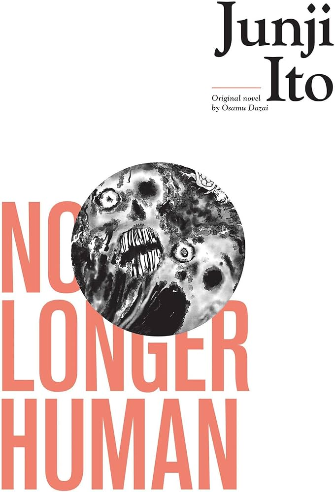

No longer human - Junji-Ito
No Longer Human é contado na forma de cadernos deixados por um certo Ōba Yōzō (大庭葉蔵), um homem perturbado, incapaz de revelar seu verdadeiro eu aos outros e que, em vez disso, mantém uma fachada de jocosidade vazia. A obra é composta por três capítulos, ou "memorandos", que narram a vida de Ōba desde a infância até os vinte e tantos anos.
Nesta versão, Yōzō conhece o próprio Osamu Dazai durante uma recuperação de asilo, dando-lhe permissão para contar sua história em seu próximo livro. O mangá inclui uma releitura do suicídio de Dazai da perspectiva de Ōba.